RecGPT-V3：把持续用户记忆、文本与语义 ID、潜变量推理接入淘宝推荐
论文：RecGPT-V3 Technical Report
作者：RecGPT Team（论文元数据列出 24 位作者，按名字字母序排列）
机构：Taobao / Alibaba Group
首次提交：2026-07-17
原文：arXiv:2607.15591
关键词：生成式推荐、持续用户记忆、Semantic ID、潜变量推理、工业部署
这份技术报告介绍阿里巴巴淘宝 RecGPT Team 在“猜你喜欢”场景部署的第三代大模型推荐系统，重点不是扩展一个离线模型，而是让用户理解、商品表示和推理过程都适配持续在线服务。论文入口如上；截至本次核验，arXiv 页面与报告未给出可独立验证的公开代码仓库或项目页，因此方法细节与生产数字以论文原文为唯一事实来源。
现有大模型推荐每次请求都会重算完整用户历史，自然语言标签又难以精确落到商品，显式思维链还带来不可承受的输出与时延成本；真正的缺口是同时获得可持续积累的用户状态、细粒度商品落地能力和低成本推理，而不是单独提高某个离线指标。
1. 背景和问题
1.1 从“能生成意图”到“能长期在线服务”
RecGPT 系列把大语言模型放进淘宝首页“猜你喜欢”的推荐链路：模型先理解用户，再生成可供检索的意图或商品表示，最后由检索、排序系统决定用户实际看到的候选。这个方向的价值不只是让推荐理由更像自然语言，而是把大模型擅长的长程归纳、世界知识和开放式推理用于传统 ID 模型很难直接表达的需求，例如“最近开始系统练羽毛球，偏进攻型球拍，也可能需要球线与护具”。然而，生成能力一旦进入亿级日活场景，评价标准便从离线可用变成工程闭环：用户理解能否跨请求复用，生成信号能否精确落到商品，推理成本能否压到生产预算内，训练目标能否和下游排序器真正一致。RecGPT-V3 的出发点就是承认前三代已经证明“大模型可做推荐”，随后集中解决“大模型推荐如何持续、精确、低成本运行”。
论文把现有系统的第一项瓶颈定位在用户建模。RecGPT-V2 的 Global Planner 每次处理请求都重新阅读完整行为序列，再分解出不同意图人格交给多个专家；高活跃用户的输入可达约 5.5 万 token，而 Planner 占 agentic intent analysis 约 95% 的计算。品牌忠诚、复购周期、运动爱好、人生阶段迁移等模式其实不会在两次请求间凭空消失，逐请求从头发现不仅浪费，也容易因窗口截断或短期噪声使表征摇摆。因此 V3 需要一种有状态的用户层：它既不能只是不可解释的单向量，也不能把旧摘要无限追加成新的长上下文；它必须保留结构、来源和时间，并允许局部更新。
第二项瓶颈是自然语言标签到商品的“窄通道”。文本标签开放、可解释、带世界知识，却往往只表达粗粒度概念；“适合马拉松训练的轻量跑鞋”可以召回大量异质商品，模型的细微推理无法完整传给商品空间。纯商品 ID 则相反：落地精确，但缺少可迁移语义，长尾和新商品更难共享知识。V3 的问题不是在文本与 ID 中二选一，而是能否让文本标签承担泛化，把由内容和协同行为共同学习的 Semantic ID（SID）承担具体落地，并让语言模型在同一序列中理解、生成两种词元。这样，意图的“可说”与商品的“可指”才可能同时存在。
第三项瓶颈来自显式思维链。论文使用强教师产生的推荐推理平均约 2300 token；显式逐 token 解码可以提升意图质量，却让输出长度、KV cache、吞吐和延迟迅速失控。简单删除推理会丢掉教师提供的计算过程，直接把推理蒸馏成最终标签又很难判断模型是否真的保留了中间约束。V3 因而提出更具体的工程问题：能否把长推理轨迹折叠为少量可学习的潜 token，用这些 token 条件化最终标签，同时仍然能按需把潜状态解码回人类可读理由。这里“可解释”必须谨慎理解为可重建，而不自动等价于重建文本对模型真实因果路径的忠实证明。
1.2 三个模块与一条共同主线
围绕三项瓶颈，论文按顺序提出 Memory Hub、Hybrid-modal Recommendation Foundation Model 和 Latent Intent Reasoning。Memory Hub 把长历史压缩成持续存在的结构化记忆，并只用新行为增量维护；混合模态基础模型在 Qwen3-14B 词表中增加 65536 个 SID token，使文本与具体商品语义可联合推理；潜变量意图推理把显式轨迹按段压进最多 10 个潜 token，再以生产排序器反馈优化意图输出。附录中的双通道 retriever 则把文本与 SID 生成结果送到同一个候选空间，使三个上游模块不止停留在语言输出层。
这条主线可以概括为“把一次性文本计算改造成可积累、可落地、可压缩的推荐状态”。状态的积累发生在用户侧，落地发生在商品表示与检索侧，压缩发生在推理轨迹侧；三者共同服务于线上指标和资源约束。论文报告 V3 已部署在淘宝“猜你喜欢”，相对 V2 在 Feed 场景取得 IPV +1.28%、CTR +1.00%、TC +1.97%、GMV +3.97%，端到端服务资源消耗下降 52.4%。这些数字显示系统方向有生产价值，但它们来自私有流量、特征、排序器和服务栈；读者应把报告理解为工业系统证据，而不是可由公开基准独立复现实验得出的普适结论。
研究问题也有清晰边界。第一，结构化记忆究竟减少了多少重复计算，人工评估是否支持其内容质量；第二，SID 注入后如何同时保持推荐能力和通用能力，文本与 SID 是否真的互补；第三，潜变量推理相对显式 CoT 是否在质量近似的前提下降低 token 与延迟，排序反馈强化是否继续带来收益；第四，线上 A/B 的业务增益能否覆盖新增模块的成本。论文给出了针对这四类问题的表格、消融和案例，却没有开放训练日志、原始样本、线上显著性区间、模型权重或完整代码。因此，下文会区分“论文直接报告”“由表格算得的相对变化”和“基于架构的解释”，不把系统叙事写成未经验证的因果定律。
2. 方法
2.1 Memory Hub：结构化压缩与持续维护
Memory Hub 先用 Structured Behavior Compression 读取用户全量行为集合，把分散点击、加购、购买和搜索归并成少量记忆单元；每个单元包含预定义或受控扩展的行为模式标识、自然语言偏好摘要、代表性行为索引、偏好品牌、时间活跃特征和时间戳。关键不是生成一次摘要，而是把摘要变成可寻址、可追溯、可更新的持久状态：Global Planner 后续只读取该状态与近期增量，不必反复在 5.5 万 token 中重新寻找同一个复购周期或品牌偏好。初始构造写为
符号解释：\(\mathcal{B}=\{b_1,\ldots,b_N\}\) 是按时间记录的完整用户行为，\(F_{\phi}\) 是由参数 \(\phi\) 控制的 LLM 记忆构造函数，\(\mathcal{M}\) 是压缩后的持久记忆集合，\(m_k\) 是围绕一个稳定行为模式组织的结构化单元，\(N\) 与 \(K\) 分别是原始行为数和记忆单元数。这个定义刻意让 \(K\) 远小于 \(N\)，但压缩质量不只由长度决定，还要依靠代表性索引保留来源、时间字段区分长期偏好与阶段变化，并通过模式分类阻止多个不相干兴趣被揉进同一段文字。
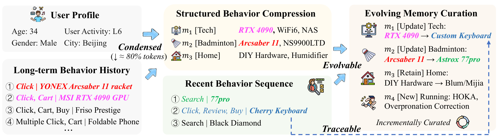
图 1 对应论文 Figure 3。左侧输入同时包含用户画像与长期行为，中间的 Structured Behavior Compression 把散乱行为归并为 Tech、Badminton、Home 等记忆单元；下方近期序列不再触发全历史重算，而是进入 Evolving Memory Curation。右侧明确区分 Update、Retain 和 New：显卡兴趣可以转向定制键盘，羽毛球拍偏好从 Arcsaber 11 迁移到 Astrox 77pro，不相关的家居单元继续保留，跑步则形成新单元。虚线回路表达“维护后的状态成为下一轮输入”，这比一次性摘要更接近数据库式物化视图。图注报告结构化结果可大幅缩短 token，而正文的核心机制是 condensed、traceable、evolvable 三者同时成立：若只追求短，可能丢来源；若只追加新行为，长度仍会不断增长；若全量重写，又会把计算瓶颈带回来。增量阶段令 \(\mathcal{M}^{(t)}\) 表示时刻 \(t\) 的既有记忆，\(\Delta\mathcal{B}^{(t,t+\delta)}\) 表示两次维护之间的新行为；模型一次前向决定哪些单元要按证据重写、哪些不变、哪些未匹配行为足以形成新模式，且不访问全量历史。论文用下式定义这次映射，并把选择性更新与新模式抽取合并，避免多个顺序调用：
符号解释：\(G\) 是增量记忆维护函数，\(\delta\) 是维护周期，\(\mathcal{M}_{\mathrm{update}}\) 同时包括被新证据重写与因无关而保留的旧单元，\(\mathcal{M}_{\mathrm{new}}\) 来自没有匹配任何旧模式的相干行为簇。更新原则是“有证据才改、无证据不扰动”：与 \(m_k\) 相关的新行为子集非空时刷新摘要和元数据，否则原样保留；全部未分配行为形成 novel 集合，只有其中出现稳定新模式才新建单元。论文生产设置约每两个月做一次 curation，这意味着记忆的新鲜度、漂移速度和批处理成本之间存在可调权衡，而不是所有用户每次请求都即时写入。
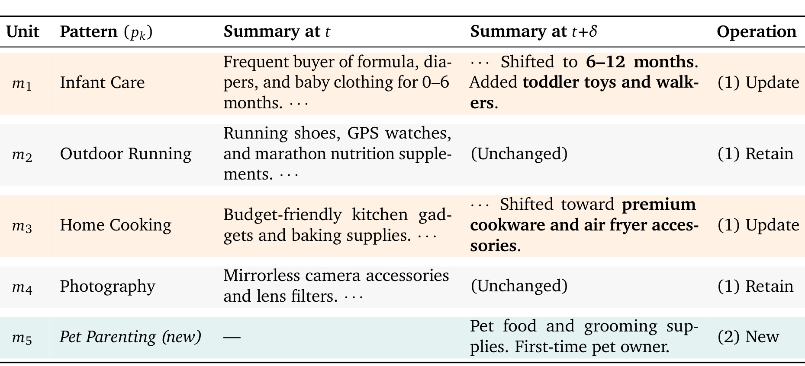
图 2 对应论文 Table 2，并完整保留 Unit、Pattern、Summary at t、Summary at t+δ、Operation 五列表头。婴幼儿护理从 0–6 个月迁移到 6–12 个月并加入学步玩具，家常烹饪从平价器具转向高端炊具与空气炸锅配件，说明 Update 不是把新事件附在旧摘要末尾，而是重写“当前状态”；户外跑步和摄影无相关新证据时 Retain，避免全局刷新造成遗忘；首次养宠行为则产生 New 单元。这个例子也揭示了 Memory Hub 的语义风险：模式边界、更新证据阈值和摘要重写都由模型决定，若新行为被误分配，错误会作为持久状态继续影响后续请求。代表性索引与时间戳为追踪提供接口，但论文没有给出自动纠错率或不同维护周期的消融，因而线上部署仍需要漂移监控与回滚策略。
2.2 Hybrid-modal Foundation Model：文本与 SID 统一建模
混合模态基础模型以 Qwen3-14B 为底座，先把商品文本、图像和侧信息分别编码，再由 Q-Former 融合；正样本来自行为日志中高频共现且多模态相似度足够高的商品对，批内其他商品作为负样本。融合表征随后进入两级 RQ-VAE，每级码本大小 32768，总计向词表加入 65536 个 SID token；一个商品由两个 code 构成，第一个表示较粗语义簇，第二个在簇内做细粒度区分。文本标签提供开放世界泛化，SID 提供受内容与协同行为共同约束的商品落点，两种表示被设计成互补通道而非替代关系。多模态融合为
符号解释：\(i\) 是商品索引，\(I^{i}_{\mathrm{text}}\)、\(I^{i}_{\mathrm{image}}\)、\(I^{i}_{\mathrm{side}}\) 分别代表标题描述、商品图和属性元数据，\(E\) 是按输入模态调用对应塔的 CN-CLIP 编码器，\(F\) 是 Q-Former 融合器，\(H^i\) 是供对比学习与残差量化使用的统一表征。论文还在融合、文本、图像三个层面同时使用 InfoNCE，使共现正对靠近、批内负对分离，以降低 RQ-VAE 码本坍塌风险；因此 SID 并非任意哈希，而是把内容相似和协同相似共同离散化后的层级语义坐标。
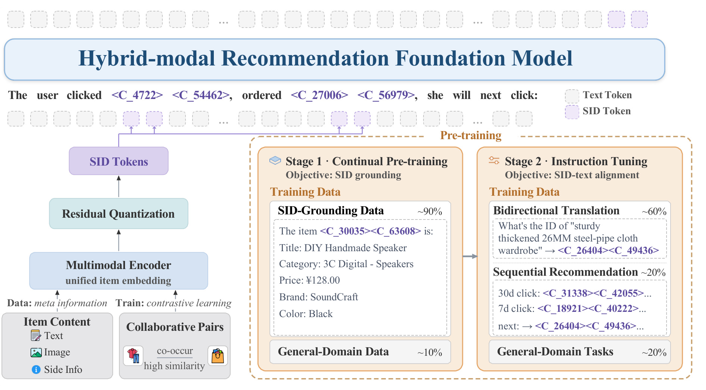
图 3 对应论文 Figure 4。左侧从 Item Content 和 Collaborative Pairs 得到统一向量，经 Residual Quantization 产生两个 SID token；上方示例显示 SID 可以和普通文本共同作为输入与输出。右侧 Stage 1 约 90% 是 SID-grounding 数据，把一个 SID 与标题、类别、价格、品牌、颜色等自然语言属性绑定，另混约 10% 通用域数据；Stage 2 约 60% 做标题或标签与 SID 的双向翻译，约 20% 做序列推荐，约 20% 保留通用任务。训练顺序很重要：随机初始化的新 token 若直接承担推荐，既没有稳定语义也容易破坏底座；先 grounding 再 instruction tuning 才把“认识商品代码”转成“在推荐上下文中联合推理”。通用数据不是装饰性正则，后续实验显示去掉它后四项通用基准几乎整体坍塌，而加入后 SID 对齐仍保持，因此这里的配比是在领域注入与灾难性遗忘之间做生产折中。
2.3 Latent Intent Reasoning：把显式轨迹内化为可重建状态
显式教师先基于专家人格与近期点击产生 \(N\) 个换行分隔的推理步骤 \(\mathcal{R}\)，再输出商品标签 \(y\)；V3 新增随机初始化的潜 token \(z_1,\ldots,z_K\)，把每一段推理压进对应位置，并让标签只条件于输入和潜序列生成。压缩目标不是让模型“少写解释”，而是把解释承担的中间计算迁入短潜状态，同时用重建任务约束其保留信息。显式因子分解被替换为
符号解释：\(x\) 包含 Global Planner 分配的专家人格以及近期点击，其中商品由短标题与 SID 表示；\(\mathbf z=(z_1,\ldots,z_K)\) 是模型先自回归产生的潜推理序列，\(y\) 是最终标签或混合模态输出，\(\theta\) 是同一生成模型参数。与显式 \(p_{\theta}(\mathcal R,y\mid x)\) 相比，推理仍是标签生成的条件，只是从自然语言轨迹 \(\mathcal R\) 换成新词表中的短 token。潜状态因此会影响预测，但仅由可重建性还不能证明重建出的文字逐句忠实描述模型内部因果计算。潜 token 数量随教师轨迹长度动态变化：论文把 \(N\) 个步骤切成连续、不重叠、每段最多 \(C\) 步的 \(\mathcal R_j\)，第 \(j\) 个潜 token 对应第 \(j\) 段，并用上限约束最长推理成本：
符号解释：\(N\) 是教师显式轨迹的步骤数，\(C\) 控制单个潜 token 折叠的步骤粒度，\(K_{\max}\) 是潜序列硬上限，\(K\) 是当前样本真正使用的 token 数。生产配置取 \(C=20\)、\(K_{\max}=10\)，所以不满一段时尾部变短，超过 200 步后只覆盖前十段。动态预算比固定十个 token 更贴近问题难度，但截断会让超长轨迹的尾部信息失去直接位置对应；论文没有报告不同 \(C\)、\(K_{\max}\) 对质量、可重建率和时延的完整曲线，这是理解压缩极限的重要缺口。潜嵌入先做 warm-up：随机选择显式轨迹连续片段，用潜 token 替换，仍只对保留文本 token 做自回归预测，使新嵌入进入预训练表示分布；随后 Multi-granularity Alignment 选择被掩码的段集合 \(\mathcal J\)，以任务提示恢复被遮住的原轨迹：
符号解释：\(\mathcal J\subseteq\{1,\ldots,K\}\) 是本次要重建的段索引，\(\mathcal R_{\mathcal J}\) 是其显式文本集合，\(c(\mathcal J)\) 是由输入 \(x\)、未遮挡文本段、遮挡位置的潜 token 以及最终输出 \(y\) 混合成的上下文，\(P\) 是告诉模型恢复哪些位置的任务提示。单段重建让每个潜位点对自己的片段负责，多段重建要求多个潜 token 在部分文本环境中协同，全轨迹重建则只凭 \((x,\mathbf z,y)\) 还原 \(\mathcal R\)；三种难度共同避免潜 token 仅成为没有稳定分工的自由前缀。
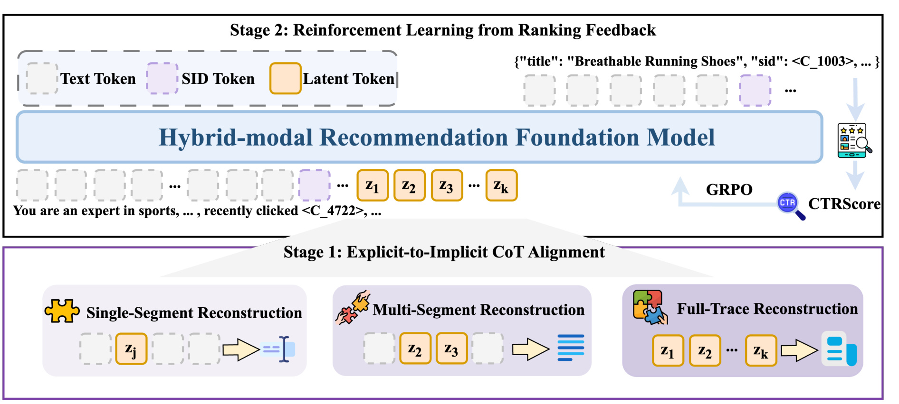
图 4 对应论文 Figure 5。下半部 Stage 1 以 Single-Segment、Multi-Segment、Full-Trace Reconstruction 三种监督把显式 CoT 内化：橙色潜 token 占据被压缩片段的位置，输出端仍要求恢复原自然语言。上半部 Stage 2 让混合模态基础模型在用户上下文后生成潜序列和商品输出，候选经过生产排序模型得到 CTRScore，再由 GRPO 更新策略。流程体现两种不同约束：重建损失关心潜状态有没有保留教师轨迹信息，排序反馈关心它最后检索出的商品是否被现网 ranker 偏好。二者若只留一个都会失衡——只做重建可能忠于昂贵教师却不匹配业务链路，只做奖励可能找到不可解释的捷径。图中“可解码”箭头是系统能力接口，不是对解释忠实性的独立审计结论。
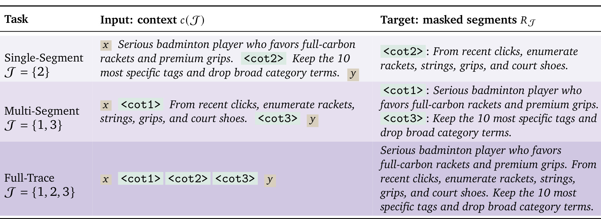
图 5 对应论文 Table 4。运行示例把一名羽毛球装备专家的显式思考拆为三个片段：用户偏好高端全碳球拍、从近期点击枚举装备、再筛出更具体的标签。Single-Segment 仅用 cot2 替换第二段，周围文字充足，目标是恢复一个局部；Multi-Segment 同时替换第一与第三段，迫使分散潜 token 在剩余上下文中协作；Full-Trace 把三个片段全部替换，目标必须恢复完整链路。完整表头让输入 context 与 masked-segment target 的差别可直接核对。这种课程把位点级绑定、跨段组合和全局充分性分开训练，也解释了为什么论文把 reasoning alignment 数据进一步拆成三类配比，而不是只对最终标签做蒸馏。显式到隐式对齐完成后，RLRF 不再使用稀疏 HitRate 作为主奖励，而是用生成结果检索候选、读取生产排序器 CTRScore 并平均前 \(K_r\) 个，使组内 rollout 更容易出现连续差异，也让奖励来自输出实际经过的下游链路：
符号解释：\(y=\{t_1,\ldots,t_m\}\) 是模型生成的若干商品意图，\(s_k\) 是这些意图检索出的候选中第 \(k\) 大生产 CTRScore，\(K_r\) 是参与平均的候选数，为避免与潜 token 数 \(K\) 混淆这里记为 \(K_r\)。平均 top-100 把“是否命中少量 held-out 商品”的稀疏信号变成较密的排序效用信号，也把策略目标和现有排序器对齐；但它同时继承排序器偏差，若 ranker 对新兴趣或长尾商品估计偏低，策略也可能放大这种保守偏好。论文进一步沿用 Constrained Reward Shaping，只有对齐质量、多样性和长度都超过阈值时 CTR 主奖励才传播，并用 GRPO 计算同输入多输出的组相对优势：
符号解释：\(\operatorname{align}\) 是由人类偏好对训练的奖励模型给出的标签质量分，\(\operatorname{div}\) 衡量结果多样性，\(\operatorname{len}\) 约束输出数量，三个 \(\tau\) 是各自门槛，\(\mathbf 1\) 是条件满足时取一的指示函数。乘法门控可以阻止高 CTR 但低质、单一或过短的输出获奖，也可能造成阈值边界不连续；报告没有公开阈值、奖励模型数据和敏感性实验，因此外部读者无法判断收益主要来自密集 CTR 信号、约束设置还是现网排序器本身。
2.4 Intent-to-Item Retrieval：双通道在商品空间汇合
附录的 retriever 将文本标签和 SID 分别编码，再投影成意图向量，与商品向量共同计算候选得分。训练同时优化 utility 与 relevance：utility 侧学习生产反馈下的点击效用，relevance 侧构造由细到粗的正集合，并按 clicked、exposed、non-exposed 的交互深度限制负样本优先级，以免相关性对比和效用目标互相冲突。这一层是系统闭环的落点：上游生成的文字和离散代码只有进入同一候选检索空间，其互补性才会体现为可测命中率。总目标为
符号解释：\(\mathcal L_{\mathrm{util}}\) 让检索器偏向更可能被点击或被生产系统判为高效用的商品，\(\mathcal L_{\mathrm{rel}}\) 让意图与由不同匹配粒度定义的正商品在表示空间靠近，\(\alpha\) 与 \(\beta\) 控制业务效用和语义落地的权衡。生产配置把效用权重设为一、相关性设为零点五，并用交互优先级约束负样本；这避免将已点击商品错误地当作较弱曝光商品的负例。方法上，文本通道可覆盖同类用户共享的宽需求，SID 通道保留更细的协同聚类；最终混合结果是否优于单通道，需要由后文 Table 13 的命中率而非架构直觉确认。
3. 实验结果
3.1 线上 A/B：业务增益覆盖两个推荐场景
线上实验部署在淘宝首页“猜你喜欢”，实验组 RecGPT-V3 与控制组 RecGPT-V2 各分配总流量的 1%。论文分别报告 Item 网格和包含商品、广告、直播等内容的 Feed 流，指标覆盖用户参与的 IPV、CTR、PV、DAU 与交易侧的 TC、GMV。Item 场景提升 IPV 3.08%、CTR 0.98%、PV 2.02%、TC 3.10%、GMV 7.51%；Feed 场景提升 IPV 1.28%、CTR 1.00%、PV 0.83%、DAU 0.56%、TC 1.97%、GMV 3.97%。所有已报告值均为正，且交易指标并未因只优化点击而退化，这是系统进入生产最重要的整体证据。
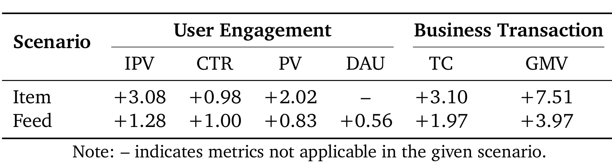
图 6 对应论文 Table 6。完整表头把 User Engagement 与 Business Transaction 分开，避免把流量互动和商业价值混成单一“提升”。Item 的 GMV +7.51% 是最大单项，Feed 的 GMV +3.97% 与 TC +1.97% 说明混合内容环境仍有交易增益；Feed DAU +0.56% 是更慢、更全局的活跃指标，Item 行因场景不适用未报告 DAU。需要注意，表中没有置信区间、实验持续时间、样本量、显著性检验或新老用户切片；“各 1% 流量足以统计显著”是论文陈述，不可由表内独立复核。V3 同时更改记忆、表示、推理与奖励，整体 A/B 证明组合有效，却不能仅凭这张表将某个线上百分点因果归给单一模块。
3.2 Memory Hub：人工质量与 55.8% 用户建模节省
结构化记忆的人工评估把 Behavior Pattern 和 Item Index 分开：前者在 2514 个标注中质量通过率 82.89%，后者在 21268 个标注中通过率 95.27%。这表明来源索引比抽象模式标签更稳定，也提示约六分之一的行为模式判断仍可能不符合人工标准。计算侧把 RecGPT-V2 全序列处理归一化为 100%，V3 每次推理读取记忆的成本为 33.43%，周期性 Memory curation 摊销后为 10.77%，总计 44.20%，即降低 55.8%。这里节省的是 Global Planner 用户建模计算，不应与整条链路 52.4% 的端到端资源下降混为同一口径。
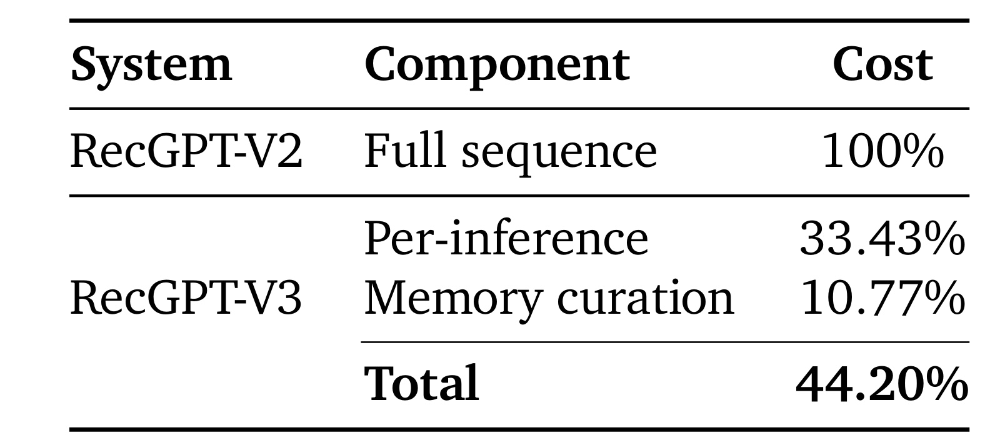
图 7 对应论文 Table 8。表格把 V3 成本拆成 Per-inference 与 Memory curation 两部分非常关键：持久记忆不是“免费缓存”，它把原来每个请求重复支付的全序列成本改为较小的逐请求读取，再外加低频维护。33.43% 与 10.77% 相加为 44.20%，相对基线 100% 的差值正好是 55.80%。生产中约两个月维护一次，使 curation 成本可以摊薄，但这一结果依赖用户活跃度分布、历史长度、维护周期和模型调用价格；如果兴趣漂移更快，需要提高刷新频率，节省可能缩小。论文未给出按用户历史长度分桶的质量—成本曲线，也未说明模式错误如何触发全量重建，因此该数字适合作为现网配置下的测量，不宜外推成所有持久记忆系统的固定收益。
3.3 混合模态基础模型：通用能力保留与领域对齐
通用能力对比包含 Qwen3-14B 原底座、加入通用域混合数据训练的混合模态模型、完全不混通用数据的版本。四项准确率依次为：GSM8K 94.31、92.65、4.70；MMLU 75.9、73.3、0.12；CMMLU 80.5、76.0、0.01；IFEval 81.52、75.60、23.29。加入推荐 SID 后仍有约 1.7 至 5.9 个点下降，但不混通用数据几乎让三项知识与推理基准归零。SID—文本对齐没有因通用数据显著受损：sid2title 为 0.1590 对 0.1567，sid2tag 为 0.2867 对 0.2909，title2sid 为 0.0842 对 0.0773，tag2sid 为 0.0394 对 0.0366。
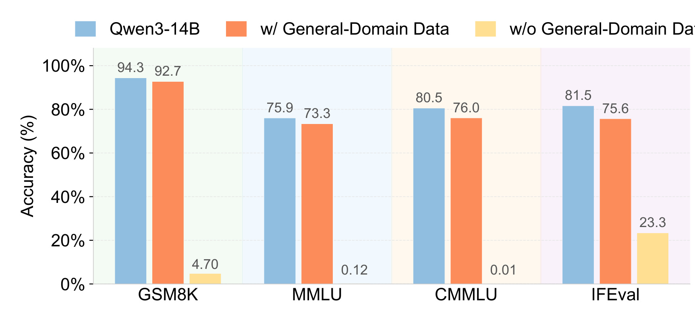
图 8 对应论文 Figure 6。蓝柱是原 Qwen3-14B，橙柱是混合通用域数据后的推荐基础模型，黄柱是不混通用域数据的版本；四个分组使用相同百分比纵轴。橙柱虽普遍低于蓝柱，但仍保持 GSM8K 92.7%、MMLU 73.3%、CMMLU 76.0%、IFEval 75.6%；黄柱分别降至 4.70%、0.12%、0.01%、23.3%，说明只训练推荐领域和随机 SID token 会发生严重灾难性遗忘。结合论文 Table 9，混合通用数据版本每个输出平均产生 28.77 个标签、覆盖 41.73 个类别、Category HR@30 为 0.3050，而无通用数据版本是 23.88、32.49、0.2250。通用语料不仅守住外部基准，也对应更丰富、更准确的推荐输出；不过表中没有等训练 token 的多比例消融，尚不能判断约 10% 与 20% 的具体配比是否最优。
3.4 后训练消融：潜推理接近显式 CoT，RLRF 再提升
在 Qwen3-14B 上，Native Reasoning 把 Category HR@30 从 0.2276 提到 0.2347，增量很小；混合模态底座直接达到 0.3050，说明 SID 与推荐预训练贡献了更大跃迁。在这一底座上，显式 CoT 监督把 HR@30 提至 0.3508、CTR 至 0.0638；潜变量推理为 0.3462 与 0.0649，类别命中略低于显式 CoT 0.0046，但 CTR 反而高 0.0011。加入 RLRF 后两项达到 0.3693 和 0.0679，是表中最优。这个顺序支持“先获得商品语义底座，再内化推理，再对齐排序反馈”的分阶段设计。
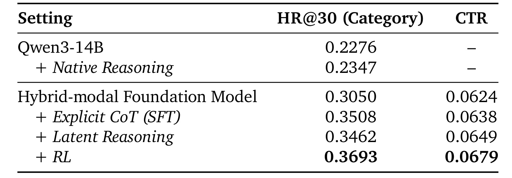
图 9 对应论文 Table 10，完整保留 Setting、HR@30（Category）和 CTR 三列表头。上半组显示普通 Qwen3-14B 与 Native Reasoning 都没有 CTR 数字，下半组才是可进入混合模态推荐链路的模型，避免跨组误比。潜变量推理在 HR@30 上达到显式 CoT 的 98.7%，同时 CTR 略高，说明短潜状态并非只靠牺牲推荐质量换速度；RLRF 相对潜推理再把 HR@30 提高约 6.67%、CTR 提高约 4.62%（相对比例由表内数值计算）。但消融没有展示“显式 CoT + 相同 RLRF”对照，因此无法区分强化学习收益是否特别依赖潜表示；CTR 也来自离线或内部评估口径，不能直接等同 Table 6 的线上 CTR 相对提升。
3.5 推理效率：输出长度从 2840 降到 122
论文在 1000 个样本上对比显式 CoT 与潜变量推理。显式模式平均输出长度 2840，input TPM 为 166K、output TPM 为 531K，总时间 1020 秒；潜推理输出长度 122，input TPM 升到 498K，output TPM 降到 66.7K，总时间 295 秒。输出长度减少 95.70%，等价于约 23.3 倍长度压缩；论文将思考 token 本身概括为约 200:1 成本下降，是由约 2300 token 显式推理压到最多 10 个潜 token 的口径。总时间下降 71.1%，即 3.46 倍加速，说明生成端削减足以抵消更高输入吞吐压力。
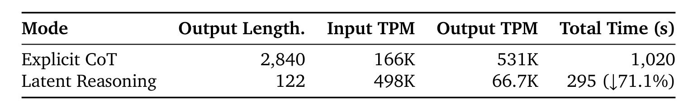
图 10 对应论文 Table 11。表格特别有价值之处在于同时列出长度、输入 TPM、输出 TPM 和墙钟时间，而不是只选择最漂亮的压缩比。潜模式 input TPM 从 166K 增至 498K，说明更短生成让系统能更快灌入输入，也可能反映批处理和服务配置差异；output TPM 从 531K 降至 66.7K，说明自回归输出压力显著缓解；总时间 1020 秒降到 295 秒，是最终可感知的系统收益。论文还说明新增 expert model 约增加 15% 计算，但 Planner 原本约比 expert 贵 20 倍，综合 Memory Hub 与潜推理后端到端资源仍下降 52.4%。由于未公开硬件、batch、并发和延迟分位数，这些吞吐数字只能在论文配置内比较，不能直接预测另一套服务栈的 P99。
3.6 文本标签与 SID：互补性由混合检索验证
进一步分析显示，文本标签平均覆盖类别数为 1.40，SID 为 0.84；跨用户重叠率文本为 11.36%，SID 为 4.61%。这符合两种模态的设计直觉：自然语言把相似需求连接到较宽共享概念，SID 更细、更个性化，跨用户复用更少。PCA 图也呈现文本标签召回在空间上分布更广、SID 候选更聚簇，但几何可视化只能做解释，真正重要的是相同检索评估下的命中率。Table 13 比较 Tag、SID、Hybrid 三种配置，给出 HR@500 与 HR@1000。
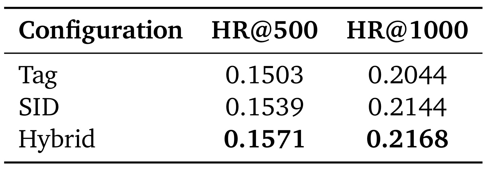
图 11 对应论文 Table 13。Tag 的 HR@500/HR@1000 为 0.1503/0.2044，SID 为 0.1539/0.2144，说明只用 SID 在两个候选规模都略优于只用文本；Hybrid 达到 0.1571/0.2168，继续超过两个单通道。以 Tag 为基线，Hybrid 在 HR@500 上相对提高约 4.52%，在 HR@1000 上相对提高约 6.07%；以 SID 为基线则分别提高约 2.08% 与 1.12%。绝对增益不大，却方向一致，支持“文本负责宽语义、SID 负责细落点”的互补论点。论文没有给出多次运行方差、不同类别和冷启动切片，也没有对两通道候选预算做等成本说明，所以这张表证明的是当前工业配置下的组合收益，而非任何混合表示都会自动占优。
3.7 端到端案例与部署解释
论文最后给出一名匿名 34 岁北京用户的端到端案例。长期历史包含羽毛球拍、显示器、酒类等行为，结构化压缩提取 Tech、Badminton、Baby 等记忆；近期出现定制键盘、77pro 搜索和 Astrox 球拍购买后，系统更新科技与羽毛球模式，保留家居兴趣并新增跑步。潜推理用 10 个 token 压缩中间分析，同时可按需解码出“进攻型羽毛球用户、偏好 YONEX、可能需要球线和维护工具”等理由，最终混合检索展示球拍架、缓震羽毛球鞋、球包和比赛用球。
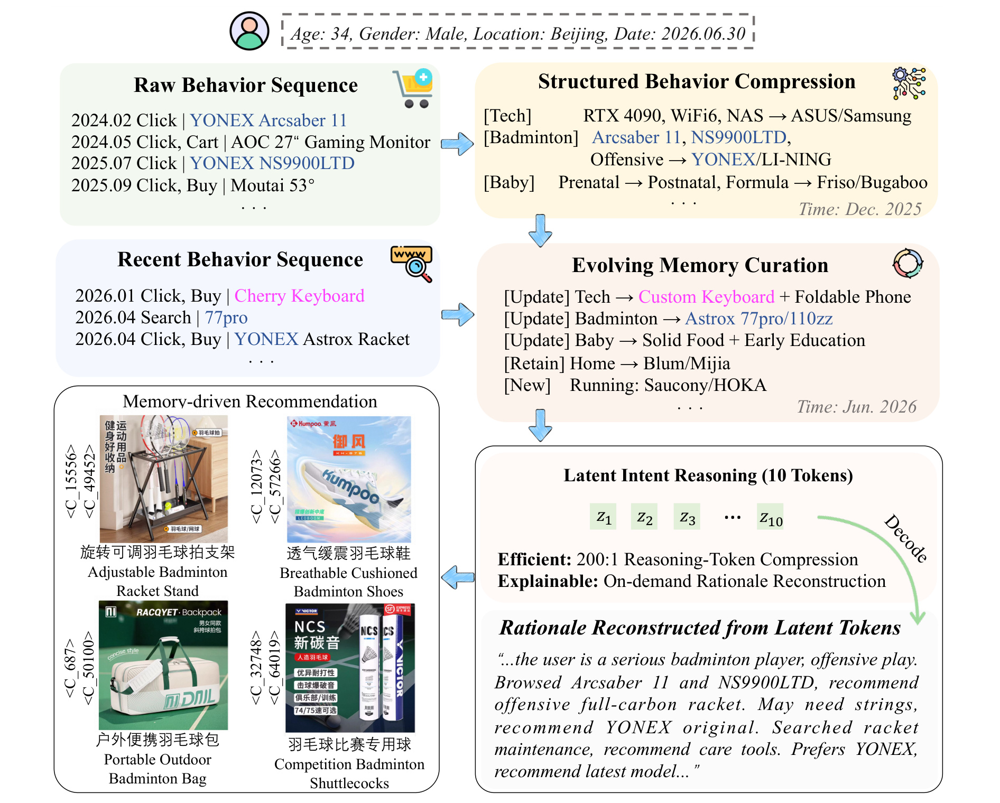
图 12 对应论文 Figure 9，也是三个模块唯一同时出现的原始对象。左上是原始长历史，右上是 2025 年 12 月的结构化行为压缩；左中是 2026 年新增行为，右中是 2026 年 6 月维护后的记忆；右下的十个 \(z\) token 表示低成本潜推理，并展示按需重建的自然语言理由；左下四个商品及其双 token SID 则是最终落地。案例清楚呈现“状态积累—局部更新—压缩推理—混合检索”的时间顺序，也说明系统的解释接口可以把潜状态转成人类可读文本。它仍是一个经过选择的单例，不能替代大规模忠实性评估：案例中的推荐看起来一致，不代表每个潜 token 都稳定对应同一语义，更不代表重建理由对最终排序具有真实因果贡献；实际部署还应把失败案例、跨时间一致性和用户纠错反馈纳入长期审计。
4. 总结
4.1 主要结论
RecGPT-V3 最有价值的地方不是再堆一个生成式推荐模型，而是把前三代暴露出的生产瓶颈拆成三类可测系统状态。Memory Hub 将高频、重复的全历史理解改造成低频维护的结构化用户状态，报告用户建模计算下降 55.8%；混合模态基础模型让自然语言标签与两级 SID 共存，既保留开放语义，又缩短意图到具体商品的距离；Latent Intent Reasoning 将约 2300 token 的显式教师思考折叠为最多 10 个潜 token，并保留按需重建接口，在 1000 样本效率实验中把输出长度由 2840 降到 122、总时间由 1020 秒降到 295 秒。双通道检索与生产排序反馈把这些模块接回现有推荐基础设施，而不是要求用一个端到端 LLM 替换所有召回和排序组件。
从证据链看，线上 Table 6 证明完整组合相对 RecGPT-V2 在参与和交易指标上同时为正；Table 8 解释持久记忆如何把每次推理与周期维护成本拆开；Figure 6 说明推荐领域注入必须配合通用数据，否则基础能力会严重遗忘；Table 10 把混合模态底座、显式 CoT、潜推理和 RLRF 的效果逐步分离；Table 11 证明效率不是只看 token 比例；Table 13 则用命中率验证文本与 SID 的互补性。系统最终报告 Feed 场景 IPV +1.28%、CTR +1.00%、TC +1.97%、GMV +3.97%，端到端资源下降 52.4%，说明质量与成本在当前淘宝配置下并非零和。
4.2 局限与后续问题
第一，复现边界很强。训练数据、用户日志、SID 码本、人工标注、奖励模型、生产 ranker、检索特征、线上流量与硬件配置均为私有，arXiv 页面和报告未核验到独立公开代码或项目页；外部团队最多复现方法形态，无法复核同口径业务数字。第二，V2 到 V3 的线上对照发生在持续演进的真实系统中，流量构成、商品池、排序器与服务配置可能同步变化；报告缺少实验周期、置信区间和切片，因此整体 A/B 不能提供模块级因果归因。第三，持久记忆会把错误从一次请求变成跨请求状态，82.89% 的模式人工通过率提示误分类和过期摘要仍值得审计，论文没有给出纠错、删除、隐私保留期限或不同维护周期的敏感性结果。
第四，潜变量的“可解释”目前主要由重建任务与案例支持。模型能够从 \((x,\mathbf z,y)\) 生成连贯理由，不等于该理由忠实揭示产生 \(y\) 的内部计算；需要干预单个潜 token、测量输出变化、比较不同解码器一致性，并对重建内容做盲审。第五，RLRF 的 CTRScore 来自生产 ranker，能够减少训练—服务不一致，却可能继承现有排序偏差并压制探索；门控阈值也可能让奖励在边界处不连续。第六，混合 SID 的两级码本对商品更新、冷启动和跨域迁移的适应仍不清楚，文本与 SID 的候选预算是否公平也需要等成本对照。
后续最值得做的三组实验是：按用户历史长度与兴趣漂移速度分桶，画出维护周期、记忆准确率、计算成本和线上收益的联合曲线；对潜 token 做删除、交换、噪声与定向解码干预，检验重建理由的稳定性和忠实性；在固定候选预算、固定参数与固定训练 token 下系统扫描通用数据比例、码本层级、文本/SID 融合权重，并分别报告老商品、新商品、长尾用户和新用户结果。若这些问题得到公开基准或匿名化数据支持，RecGPT-V3 的意义会从一份强工业报告进一步上升为可验证的大模型推荐系统范式。